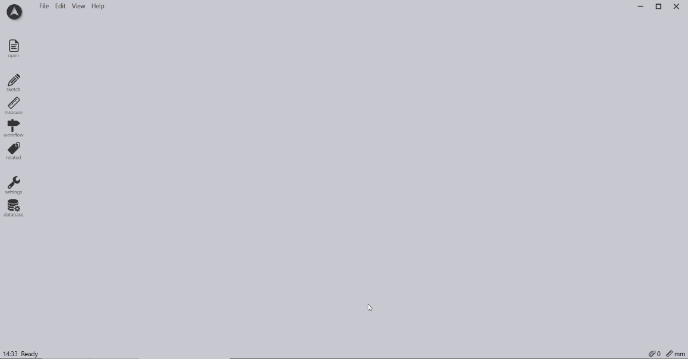
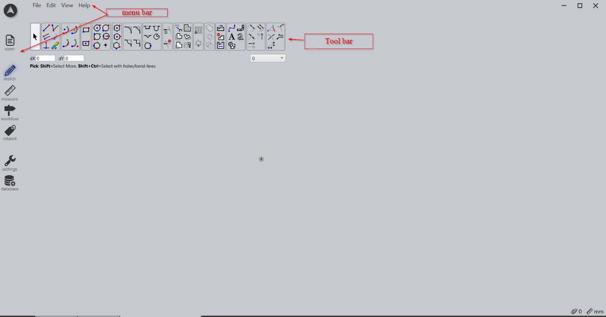
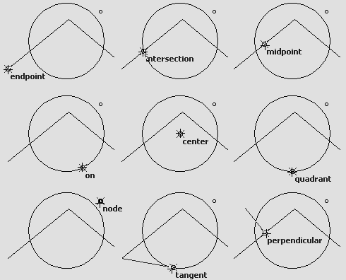
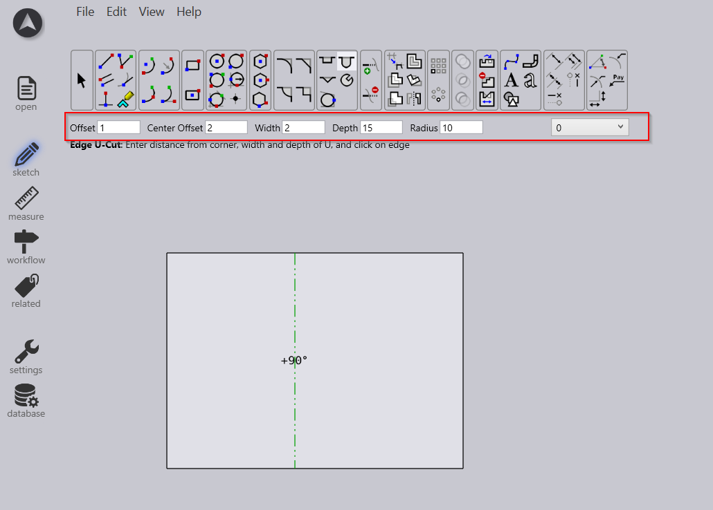
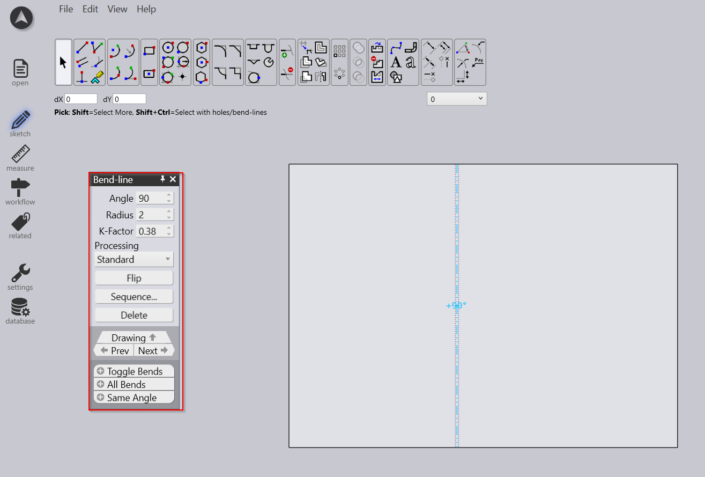
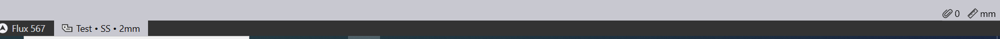

UI, toolbars and general
User Interface
-
The user interface (UI) in CAD software is designed to optimize user interaction with tools and functionalities for efficient design creation and management.
-
It includes a workspace, toolbars and menus, and viewport navigation tools to enable zooming, panning, and rotating views.
-
Customization options allow users to personalize tool placements, UI layouts, and keyboard shortcuts.
-
Integrated help features provide access to documentation and support resources for learning and troubleshooting.
-
Overall, the CAD UI aims to enhance productivity, streamline workflows.

Tool bars and Menus
-
Toolbars and menus are integral components of CAD software’s user interface, offering streamlined access to essential commands and tools.
-
Toolbars display icons representing frequently used functions such as drawing tools, editing commands, and navigation controls.
-
Customization options allow users to personalize toolbars by adding or removing icons, adjusting layouts, and creating custom toolbars tailored to specific workflows.
-
Shortcut keys displayed alongside commands provide quick access via keyboard input, enhancing productivity.
-
Integrated context-sensitive toolbars dynamically adjust based on selected tasks or objects, offering relevant options for precise editing and design refinement. Together, these interface elements optimize usability, efficiency, and flexibility in CAD software for diverse design requirements.

Pan Zoom Rotate
Pan
-
The "pan" function in CAD software allows users to move their view across the drawing area by pressing down the mouse wheel button and moving mouse in desired direction.
-
This does not change the zoom level.
Zoom
-
Zoom commands in CAD software are essential for adjusting the view of drawings to focus on specific details or to view the entire project area. Zoom in/ Zoom Out Use mouse wheel to achieve zoom in /zoom out. Zoom Extents Click on the Zoom Extents icon, this command ensures that all elements of the drawing are visible without manually adjusting the zoom level.
Snap
-
The snap tool in CAD software enables precise object alignment by snapping to grid points, endpoints, midpoints, intersections, centres, and other geometric features.
-
It enhances drawing accuracy, ensures dimensional consistency, and supports efficient design workflows.
-
By moving cursor near to snap points it should display type of snap.

Textual Interface
-
The command line interface in CAD software enables users to type commands directly, offering quick access to functions and precise control over drawing operations.
-
It allows for efficient input of commands such as drawing lines, circles, and other shapes, move, copy, and rotate etc. This tool is essential for experienced users who prefer keyboard input for speed and precision.
-
Users can specify coordinates, dimensions, and other parameters directly, enhancing accuracy. The interface often includes autocomplete features and command history, speeding up workflow by suggesting commands and recalling previous entries.
Panels
-
To Display and edit properties of selected objects.
-
By clicking entity or bend line popup window will appear and user can be able to modify the value.
-
Real time modification will be displayed.

Status Bar
-
Display information such as coordinates, snap settings, and units.
-
The status bar in CAD software displays essential details such as current coordinates, drawing scale, and active layer.
-
It offers quick toggles for settings like snap, grid, and ortho mode, allowing users to easily switch these features on or off. Users can monitor the status of commands and view contextual information based on the selected tool, enhancing their workflow efficiency.
 S